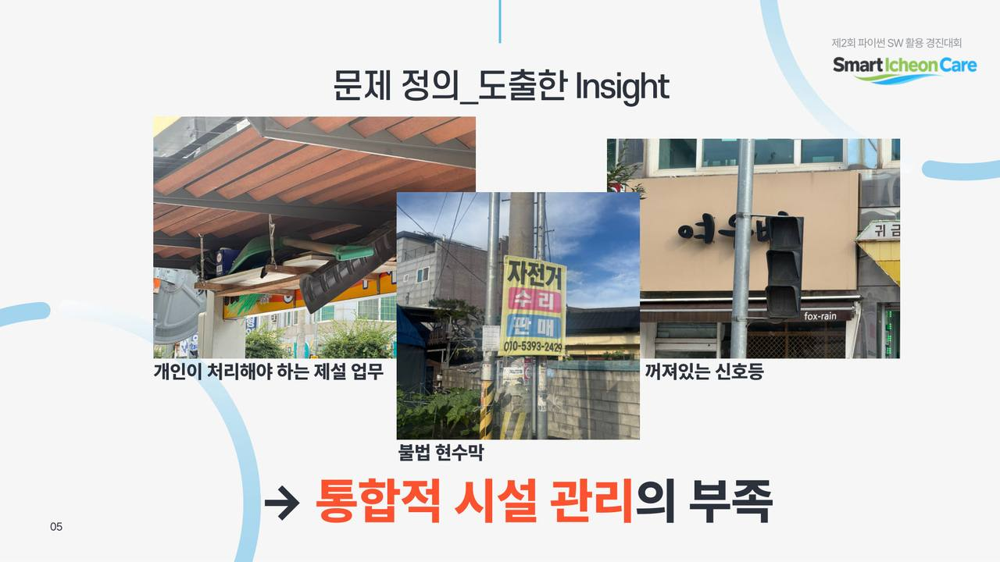
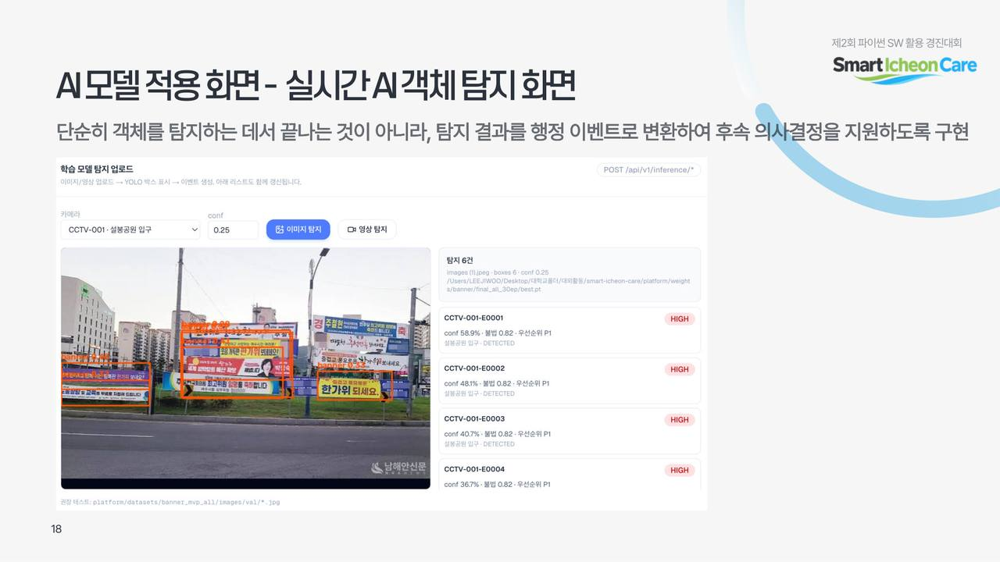
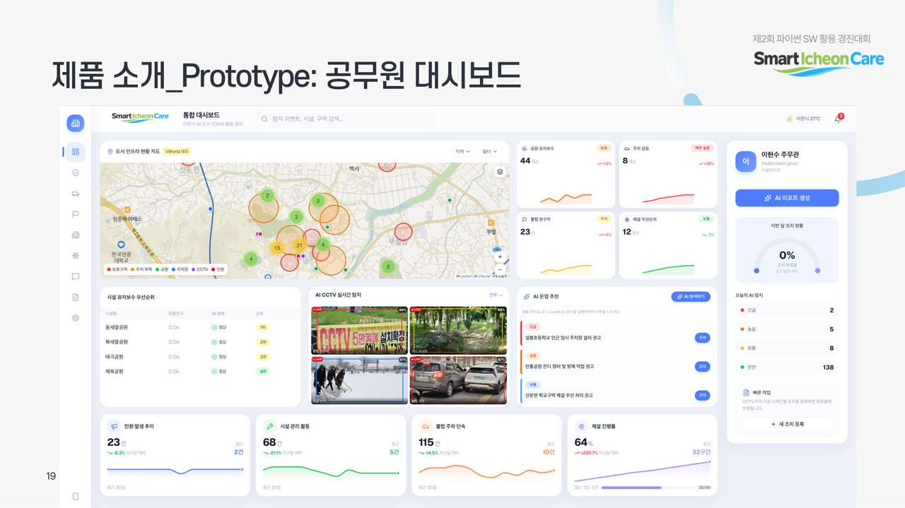

Smart Icheon Care
넓은 지역을 소수 인력이 다 돌 수는 없다. 카메라가 먼저 찾고, 위험한 것부터 사람이 확정한다.
탐지 다음에 우선순위를 붙였다. F1 0.591, 약 15.7 FPS. 캠프 대상, 파이썬 SW 우수.



넓은 지역을 소수 인력이 다 돌 수는 없다. 카메라가 먼저 찾고, 위험한 것부터 사람이 확정한다.
탐지 다음에 우선순위를 붙였다. F1 0.591, 약 15.7 FPS. 캠프 대상, 파이썬 SW 우수.


